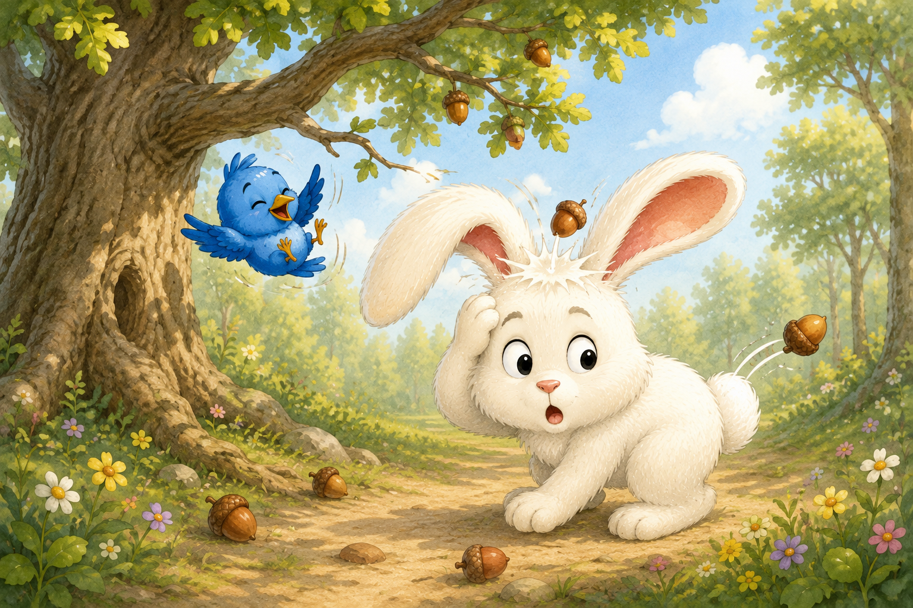
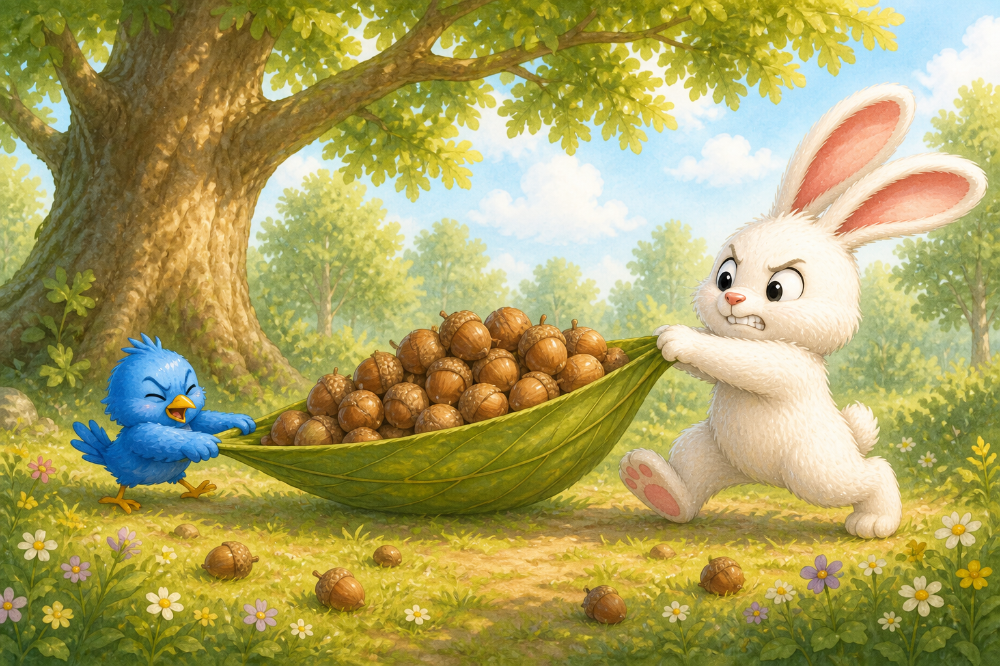
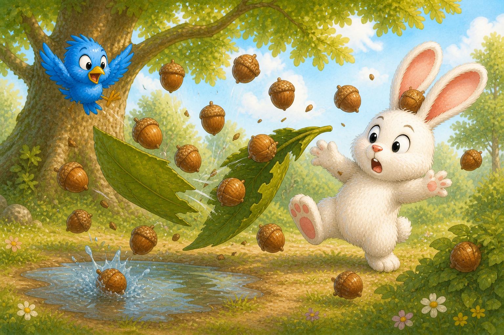
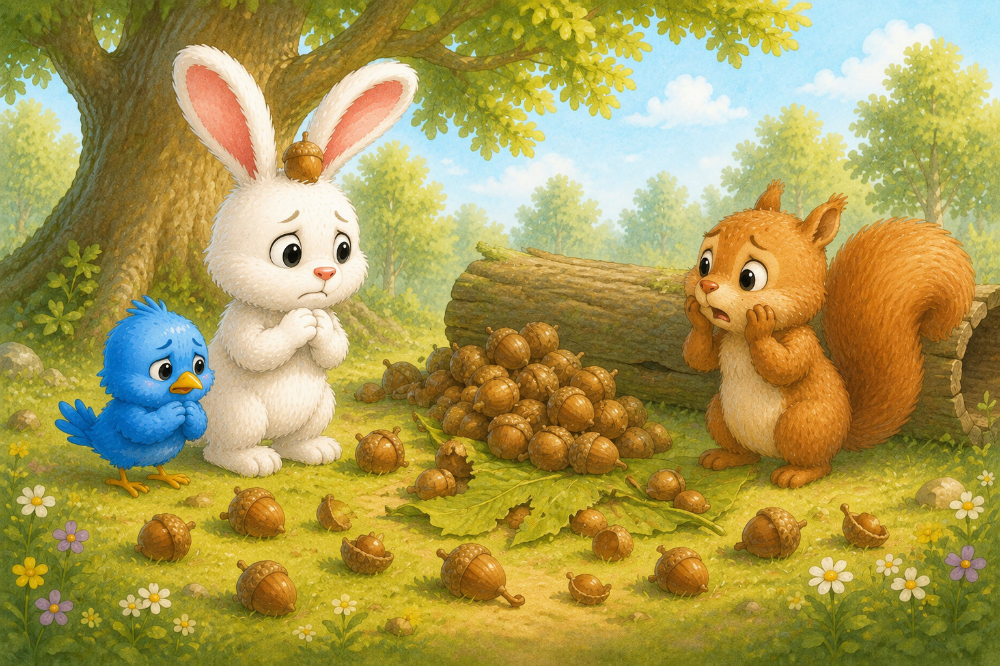
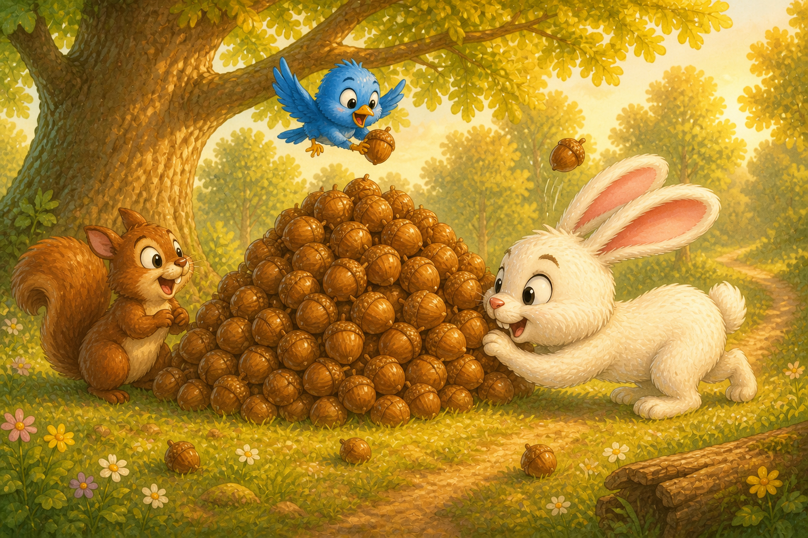

Pip woke with a feeling that something was wrong. BONK! An acorn landed on Waffles’ head. Then another bounced off his bottom. Pip laughed so hard she fell from her branch. Waffles glared up. “This tree has declared war.”

PIP & WAFFLES
Pip and Waffles and the Great Acorn Emergency
An illustrated woodland adventure.


Acorns covered the path, the bushes, and even Waffles’ head. “We have an acorn emergency,” he announced. To stop anyone else from getting bonked, Pip and Waffles piled the acorns onto a giant leaf. Pip pulled. Waffles pushed. The heavy leaf moved one tiny inch.

They pulled harder. They pushed harder. Then—RIIIIIP! The leaf tore in half and acorns flew everywhere. One went PLOP into a puddle. One went POOF into a bush. One landed between Waffles’ ears. “Do not laugh,” he told Pip. She laughed anyway—and soon Waffles did too.

A tiny voice said, “Excuse me!” A squirrel popped out from behind the log and stared at the mess. They were his winter acorns! Waffles whispered, “We may have made the emergency worse.” Pip promised they could fix it. “We are excellent fixers,” said Waffles. “We are... acceptable fixers,” said Pip.

The three friends gathered every acorn. Pip searched from above, the squirrel carried them in his cheeks, and Waffles pushed them with his nose. At last, the winter pile was perfect. Then—BONK! One more acorn landed on Waffles. Pip led everyone away to find dinner while Waffles kept a very close eye on that tree.